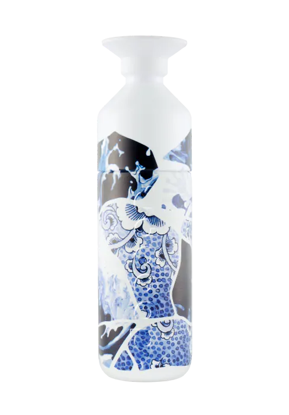

Dopper Insulated (580ml) x Royal Delft - the Tide
Dopper Insulated (580ml) x Royal Delft - the Tide
€49,95

Ontdek onze oplossingen
- 
Deze thermosfles houdt je water 9 uur warm of 24 uur koud.
Lekvrij, krasvast en dubbelwandig vacuüm geïsoleerd.
Exclusieve Dopper x Royal Delft collab, waar traditioneel vakmanschap en duurzame innovatie samenkomen.
Wil je iemand verrassen? Schrijf hieronder een persoonlijke boodschap, wij drukken het op een kaartje en versturen het als ’message in a bottle’. Mobiele gebruikers: tik op het icoon naast ’in winkelmand’.
Twee meesterwerken Born from Blue
Ontworpen voor kunst- en designlovers, combineren deze duurzame thermosflessen innovatie met authentiek Delfts Blauw. Elke fles vertelt een eigen verhaal, geïnspireerd door de kracht van water.
The Tide staat voor vooruitgang door kleine, maar constante stappen, zoals golven langzaam maar zeker de kustlijn vormen. Het design is geïnspireerd op de delicate mozaïektechniek.
Duurzaamheid
Dopper Insulated wordt op verantwoorde wijze in China geproduceerd volgens de BSCI Code of Conduct.
Met het gebruik van een Dopper-fles voorkom je de verkoop van 104 wegwerpwaterflessen per jaar.
Vervoerd met uitsluitend biobrandstoffen, dankzij onze samenwerking met GoodShipping.
Ons doel is bijdragen aan een circulaire economie. Daarom is deze waterfles Cradle to Cradle Certified® Bronze. *Exclusief de opdruk
Specificaties
- We produceren al onze Steel en Insulated producten met gecertificeerd 90% post-consumer gerecycled 18/8 roestvrij staal
- Thermosfles, gemaakt van 90% gerecycled staal
- Dubbelwandig vacuüm geïsoleerd
- Vaatwasserbestendig tot 65 graden
- Het driedelig ontwerp - fles, beker en dop - is gemakkelijk te vullen en schoon te maken
- Geschikt voor warm en koud water
- Koffie en thee kunnen vlekken en geurtjes veroorzaken
Afmetingen en gewicht
- Inhoud: 580 ml
- Diameter: 7,3 cm
- Hoogte: 26 cm
- Gewicht: 380 gram
Materialen
- 18/8 Food Grade Roestvrijstaal (fles)
- PP — Polypropyleen (dop)
- Tritan (beker)
- Siliconen (afdichtingsring)
- Vrij van BPA en andere schadelijke chemicaliën
Nog een trapje hoger?
Check de Dopper Carrier. Zo kun je altijd voor herbruikbaar kiezen, wat je ook doet.
Klantenservice
Lees meer over onze bezorgopties. Andere vragen?Raadpleeg ons Help Center.
Veilige materialen.
Onze producten zijn vrij van BPA, ftalaat en lood, er zitten geen giftige of verboden stoffen in je Dopper-fles.
Makkelijk schoon te maken.
Het driedelig ontwerp van de Dopper-fles maakt schoonmaken een fluitje van een cent. Alle onderdelen zijn vaatwasmachinebestendig (65 ˚C).
Track your product. Trace your impact.
Bekijk de volledige reis die je product aflegt, van productie tot levering tot het einde van de levensduur. Je krijgt inzicht in de materialen die we gebruiken, de reis die het product aflegt en de voetafdruk. Bekijk het Dopper Digital Product Passport en kies bewust voor duurzame consumptie.
Gerelateerde producten
Minimize your impact